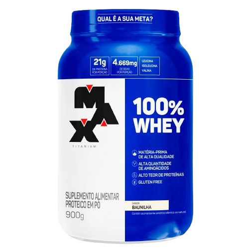

O que é: É um suplemento alimentar proteico de alto valor biológico, extraído durante o processo de fabricação do queijo. A versão "Gold Standard" (padrão ouro) geralmente indica uma mistura de proteína isolada (mais pura) e concentrada. Para que serve:Serve para complementar a ingestão diária de proteínas. É essencial para a construção muscular (hipertrofia) e para a recuperação das fibras musculares que são "lesionadas" durante o treino. Como age no corpo: Sendo de rápida absorção, ele entrega aminoácidos rapidamente para o sangue e para os músculos, interrompendo o catabolismo (perda de massa muscular) e iniciando o anabolismo (construção).
É um suplemento alimentar proteico de alto valor biológico, extraído durante o processo de fabricação do queijo. A versão "Gold Standard" (padrão ouro) geralmente indica uma mistura de proteína isolada (mais pura) e concentrada.
Serve para complementar a ingestão diária de proteínas. É essencial para a construção muscular (hipertrofia) e para a recuperação das fibras musculares que são "lesionadas" durante o treino. Como age no corpo: Sendo de rápida absorção, ele entrega aminoácidos rapidamente para o sangue e para os músculos, interrompendo o catabolismo (perda de massa muscular) e iniciando o anabolismo (construção).
.png)
.png)